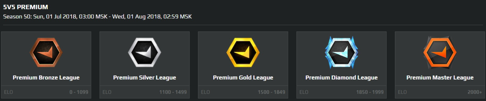

Безусловно все игроки разделяются на уровни в зависимости от качества их игры. Это важно делать по всем видам игр, так как соперник и свои союзники должны быть достойны твоего уровня.
У нас есть статья про классические Ранги и Звания в кс го, но на FACEIT все иначе. На платформе существует всего 10 уровней в рамках чего вы развиваетесь. И переход из одного уровня на другой достаточно предсказуем, так как организация не скрывает — какое количество (ELO) очков вам необходимо получить для того, чтобы поднять уровень. В то время, как встроенный Соревновательный режим в CS:GO официально не оглашает причину повышения или понижения ранка.
Что такое faceit
В этой статье мы максимально подробно постараемся узнать о лучшей платформе по CS:GO — Faceit!
Все уровни на FACEIT:
-
 level (свыше 2000 ELO) — Вы имеете право подавать заявку на участие в Мастер Лиге;
level (свыше 2000 ELO) — Вы имеете право подавать заявку на участие в Мастер Лиге;
 level (1851-2000 ELO) — Хороший уровень, есть к чему стремиться;
level (1851-2000 ELO) — Хороший уровень, есть к чему стремиться;
 level (1701 - 1850 ELO) — Сильный среднячок;
level (1701 - 1850 ELO) — Сильный среднячок;
 level (1551 - 1700 ELO) — Твердый среднячок;
level (1551 - 1700 ELO) — Твердый среднячок;
 level 1401 - 1550 ELO) — Среднячок;
level 1401 - 1550 ELO) — Среднячок;
 level (1251 - 1400 ELO) — Ниже среднего (по меркам классического MM это GLOBAL);
level (1251 - 1400 ELO) — Ниже среднего (по меркам классического MM это GLOBAL);
 level (1101 - 1250 ELO) — Сильный начинающий игрок
level (1101 - 1250 ELO) — Сильный начинающий игрок
 level (951 - 1100 ELO) — Уровень, который дают при регистрации в лиге.
level (951 - 1100 ELO) — Уровень, который дают при регистрации в лиге.
 level (801 - 950 ELO) — Ниже начинающего
level (801 - 950 ELO) — Ниже начинающего
 level (1 - 800 ELO) — Начало
level (1 - 800 ELO) — Начало
На низких левелах также могут встречаться союзники, которые будут сильно мешать играть. А также создавать большие проблемы нормальной игре. Это все также является одной из причин того, что CS:GO в свое время стал бесплатным. То есть теперь регистрация аккаунта на FACEIT стала еще более доступной. И в случае, если вы имеете плохую репутацию, то вы всегда сможете создать новый аккаунт.
Что такое FPL. У меня 10-й левел
FPL — Faceit Pro League. Это закрытое сообщество профессиональных игроков в отдельных регионах мира. К примеру в Европейском регионе их может насчитываться более 150 игроков. Но большинство из них получили личное приглашение от создателей платформы. Также есть игроки, которые попали в это комьюнити выиграв большое количество игр и пройдя несколько сильнейших отборочных этапов, которые мы детально описывали в нашей статье про то, как стать профессиональным игроком через faceit.
Когда вы получили 10-й уровень, то рекомендуем оплатить и купить платную подписку. У вас будет хорошая возможность попасть в 100 лучших игроков в течении месяца на Master League:

Далее будет следующий шаг — попасть в пятерку лучших этапа FPL Challenger.
Ну, а показав хороший результат и там вы сможете заработать уже денег (от 3000$ обещает фейсит за такой путь). А также у вас будет возможность пройти на FPL и получить контракт от известной организации.
Недостатки и преимущества
Преимущества FACEIT
- ⓵ 128 тикрейт (сравнительно с классическим подбором от CS:GO 64). То есть обмен данными между сервером и клиентом происходит в 2 раза быстрее, что повышает качество игры с обеих сторон;
- ⓶ Лучший античит из всех существующих платформ в CS:GO;
- ⓷ Нет случайно забродивших игроков, которые просто хотят пофаниться (такие все играют классический Матч Мейкинг);
- ⓸ Шикарный шанс получить возможность попасть в сильную команду по причине того, что ты сильный игрок (кибеспортивная карьера открыта);
- ⓹ Заработанные монеты можно променять на полезные вещи в магазине платформы;
- ⓺ Достаточно логичная и проработанная система подбора игр.
Недостатки FACEIT
- ⓵ Достаточно сильно ограничены права для бесплатников;
- ⓶ Несмотря на хороший античит система все равно пропускает читеров (но тут они логичны, так как речь идет о деньгах);
- ⓷ Убрали возможность выбора сервера (ранее капитан команды мог выбрать географическое расположение сервера для данного матча). Сейчас бывает такое, что у одной команды пинг 20, у другой 80;
- ⓸ Очень тяжелая и сложная система отбора на FPL (многие достойные игроки по несколько лет пытаются туда попасть)